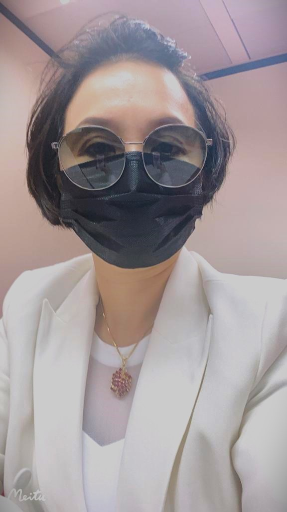

保險，一種風險管理方式，其歷史最早可追朔於至公元前三千年和公元前二千年。
當時，中國和巴比倫的商人就已經開始嘗試轉移或分散風險。
直至1666年倫敦大火，財產保險因而問世。
而18世紀中，蘇格蘭長老會教士羅伯特．華勒斯與亞歷山大．韋伯斯特建立的
「蘇格蘭教會牧師遺孀基金會社」（演變成今日蘇格蘭遺孀基金）等保險組織，
使人壽保險企業化。
今天已經成為現代社會、經濟體系正常運轉不可缺少的一環。
本人從事保險行業已有十幾年經驗
無論對金融產品、或各種投資都非常熟悉
多年、來一直帶領的團隊在行內獲得無數獎項
